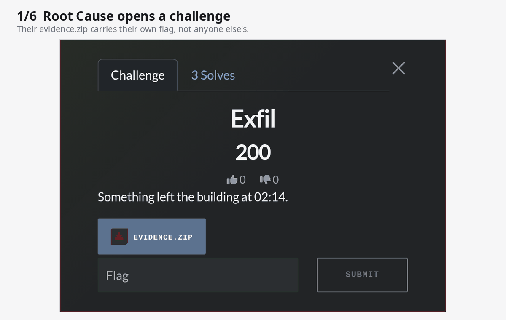

Flagprint
Every team gets its own flag and its own files.
A shared flag tells you who leaked it.
An open-source plugin that stops flag sharing in CTFd. Per-team flags, per-team challenge files, and shared-flag detection that names the leaker. Free, for the CTFd you already run.

What it does
- Unique flags per team. Write
flag{st3g0_l0v3s_y0u_{team}}; each team's code is an HMAC of the challenge and the team. No flag table. - Per-team files of any kind. Swap a sample flag inside text, binaries, pcaps and zips, or let your
generate.pybuild each team's file in an offline sandbox. - Who leaked it. A copied flag is a plain "Incorrect" for the player and a live alert for you, with both teams, the player, IP and time.
- Admin tools. Share alerts, flag lookup, shared IPs, per-team flag regeneration, an optional Hall of Shame.
- Invisible to players. The challenge type looks like a normal one; nothing hints that flags differ.
Install
cd CTFd/CTFd/plugins git clone https://github.com/rj-karan/ctfd-flagprint flagprint
Restart CTFd and open Admin → Flagprint. Script delivery also pulls the sandbox image: docker pull ghcr.io/rj-karan/flagprint-generator:latest.